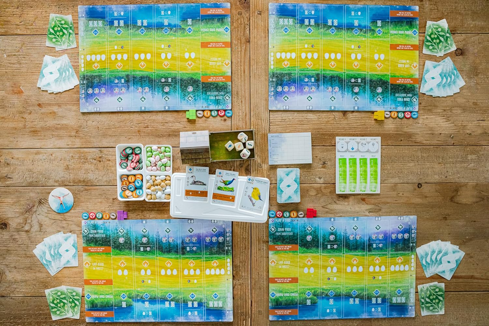
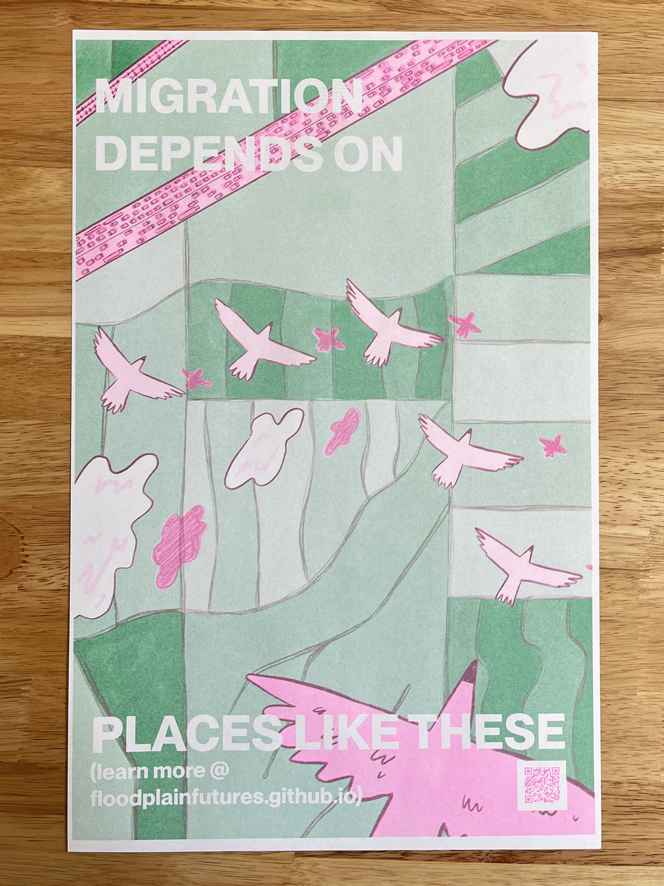
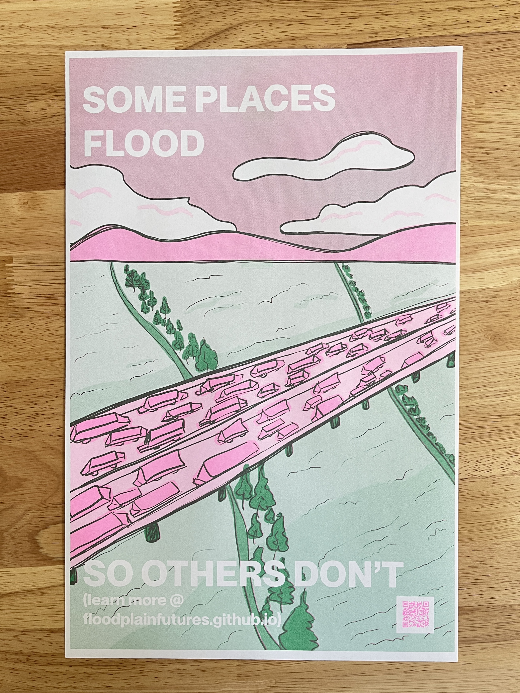

mfa thesis
designing for shared ecological understanding: the yolo basin
This page is being updated frequently as the project comes together. It will be finalized for exhibit content on June 5th, 2026 after the exhibit opening day is complete and reupdated with closing thoughts and thesis paper outputs after June 20th, 2026 when the exhibit closes.
overview
I've lived in Davis almost my entire life. I've driven past the Yolo Basin hundreds of times on I-80, like many people who live in Davis have. To me it was easy to overlook, a pretty landscape during the winters when it flooded and not a whole lot more. I misunderstood it. I didn't actually visit it until January 2026 when I decided to explore the basin for my MFA thesis. It's a place that is just 15 minutes from where I grew up, and I had no idea what was happening there.
There is a lot going on in this space! The basin simultaneously functions as flood control infrastructure, critical migratory bird habitat along the Pacific Flyway, and agricultural land. These roles don't happen separately. They layer on top of each other, shifting with the seasons.
This thesis is an attempt to close that gap through information design, interactive systems, and a planet-centered framework that puts the ecosystem at the center of the work rather than treating it as backdrop. The project translates environmental data and field research into things people can actually encounter in different forms of media and place of time: a website, risograph posters, literature review zines, and a physical exhibition at the Shrem Museum.
the yolo basin

The basin operates across three overlapping identities: flood infrastructure in winter, migratory bird habitat in spring, and agricultural land through summer. These roles do not happen separately. They layer on top of each other, shifting with the seasons, and most people who drive past it on I-80 have no idea any of it is happening.
The big idea behind this thesis is that the Yolo Basin is a living landscape where flood, food, and flight intersect across every season. Design can make that story visible.

research methods
Research for this project was conducted on site and through the literature. I spent time walking and photographing the basin across different seasons, mapping spatial and seasonal patterns, and collecting data from environmental research and monitoring projects. I also completed an extensive literature review on floodplain systems, migratory habitat, citizen science, and design communication, which became the foundation for the zine series.

influences
Three projects shaped how I thought about communicating ecological information to public audiences.

Wingspan (2019) showed how real ecological data can become a playable, learnable system without losing scientific accuracy. Players learn bird behaviors through repeated interaction rather than instruction.

Xeno-canto (2005) translates birdsong into visual spectrograms paired with geographic metadata, creating an interface that works for both experts and curious newcomers. It also demonstrated how crowdsourced citizen science can fill gaps that long-duration data collection cannot.

This Is a Picture of Wind (2018) by JR Carpenter is a hybrid web and print project documenting flooding through diary entries. It showed how multiple formats create multiple entry points into the same material.
Together these pointed toward an approach built on interactive learning, participatory ecology, and personal storytelling around ecological concerns.
design outputs
interactive website
The website is the central platform for the project. Built in HTML, CSS, and JavaScript, it features interactive maps showing basin geography and seasonal change, data visualizations of ecological processes, and field notes from site visits. It is designed to be displayed on a monitor as part of the exhibition and accessible online.


poster series
Three risograph-printed tabloid posters, each exploring one of the basin's core themes: flood, migration, and agriculture. The posters are designed as public communication artifacts that translate complex ecological systems into something clear and visually direct. They are mass-printed so visitors can take one home.


lit review zines
As part of the literature review process, I created a series of small foldable zines summarizing and interpreting key readings related to the thesis. Topics include ecological systems, data visualization, design communication, citizen science, and the history and geography of the basin. Around 20 zines total, printed on 8.5x11 and folded down. They are available to browse and take home at the exhibition.
Browse the full zine series: The Lit Review Project ↗

embroidery hoops
Three 6-inch embroidery hoops depicting the basin's three seasonal stages. Each hoop layers embroidery over maps and aerial photographs of the basin, making the abstract geography tactile and intimate. These hang alongside the posters as part of the exhibition wall.
exhibition
This portion of the project is still in process as I begin installing for the exhibit opening on June 4th, 2026. I'll add photos here of the process.
The exhibition is at the Manetti Shrem Museum at UC Davis, opening June 4th, 2026. The centerpiece is a desk with a touchscreen monitor where visitors can explore the interactive website at their own pace.
Above the desk is a bulletin board covered in aerial maps of the field site, polaroid photos, regular photographs, postcards, pamphlets, and news clippings. Things are pinned and strung together to show where events have occurred and give more context to the site itself.
All three risograph posters are hung framed on the wall. There are also other photographs on the wall and a framed colophon with information about the people who helped with the project. Visitors can grab a poster and take it home.
basin timeline
The Yolo Basin has a long history of flood, management, and ecological work. Key moments from 1851 to today, from the Great Flood to the 2025 Big Notch salmonid restoration project. Click on each event to learn more.
Fremont, the first Yolo County seat, is wiped out by floods at the Sacramento and Feather River confluence. An early and dramatic reminder of the basin's vulnerability to seasonal flooding.
The largest recorded flood in the history of California, following several severe storms in succession. The Sacramento Valley becomes an inland sea for weeks, reshaping the region's relationship to water and flood management for generations.
The State Legislature enacts flood control legislation and construction of major infrastructure begins. The Yolo Basin begins its transformation into a managed floodplain, both ecological system and engineered landscape.
March 18th: the original causeway opens, stretching 3.13 miles across the floodplain. A three-day celebration is held. The causeway becomes one of the longest bridges in the western United States, and the structure most people associate with the basin today.
Established as a federal project under the U.S. Army Corps of Engineers. The Yolo Bypass is engineered into the landscape — land functioning simultaneously as infrastructure and ecological system.
The first Audubon Christmas Bird Count in the Sacramento circle begins, covering part of the Bypass. An early instance of citizen science documenting the basin's extraordinary migratory bird habitat along the Pacific Flyway.
A community organization is established with plans to assist in the creation of the Yolo Bypass Wildlife Area. The Foundation becomes a key advocate for the basin's conservation and public access.
The U.S. House approves $1.6 million in the Army Corps budget for the Yolo Basin Wetlands Project. The State Wildlife Conservation Board separately approves $4.75 million for a 3,100-acre land purchase. A turning point for the basin as recognized habitat.
The California Department of Fish & Wildlife opens the Yolo Bypass Wildlife Area to the public. For the first time, people can formally visit and experience the basin, fifteen minutes from Davis.
UC Davis and the Department of Water Resources Trout begin collaborative research on flooded rice fields as salmon habitat. The Nigiri Project demonstrates that agricultural land and fish habitat can coexist, and even support each other.
Yolo Bypass Salmonid Habitat Restoration and Fish Passage is completed. The Big Notch project improves fish passage through the bypass, reconnecting salmon to historic habitat and marking a new chapter in the basin's ecological restoration.
thank you!
This project is meant to show that design can be a tool for making complex environmental systems easier to see, understand, and care about. It is an attempt to do that for a landscape that most people pass by without stopping. The Yolo Basin is not a dramatic place at first glance, but it is doing a lot of work, ecologically and infrastructurally, and most of that work is invisible to the people who live near it.
The goal is not to teach people facts about the basin. It is to give them enough of an entry point that they start to notice it. A zine they read on the bus, a poster on their wall, a map they explore for ten minutes. Any of those is enough.
project colophon
this project would not have been possible without the support and collaboration of many individuals and organizations.
Images and Media were collected and sourced (& authorized for permission of use) from the following UC Davis Departments:
Museum of Wildlife and Fish Biology (MWFB) - provided bird specimen to photograph
Library Map Collection - provided Aerial Photography used as site map
Archives and Special Collections - provided Yolo Basin Foundation Material (postcards, event posters)